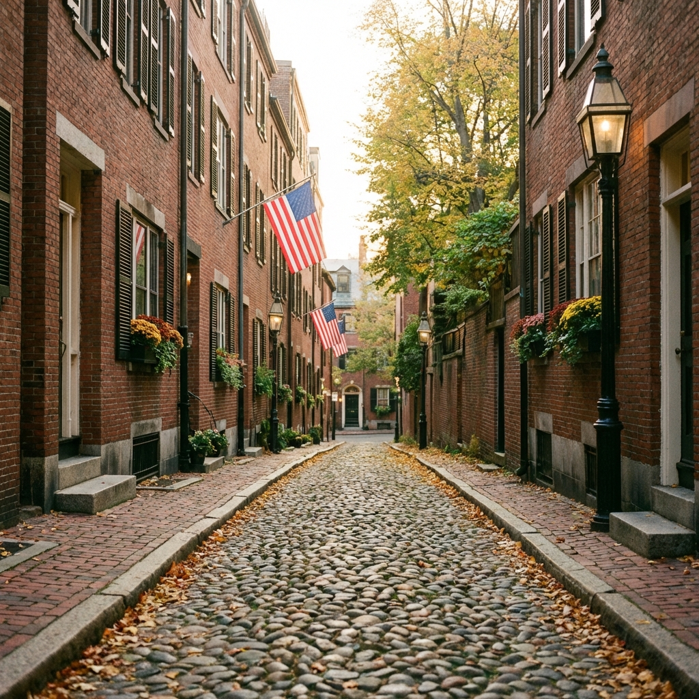

Itinerario del Día
Día completo dedicado a explorar la historia fundacional de los Estados Unidos y el prestigio académico de Harvard.
Freedom Trail
Recorreremos el famoso camino de ladrillos rojos que conecta 16 sitios históricos.
- Boston Common: El parque público más antiguo de EEUU.
- Old State House: Donde se leyó la Declaración de Independencia.
- Paul Revere House: La casa más antigua del centro de Boston.
Harvard
Cruzaremos el río Charles hacia Cambridge para visitar la universidad más famosa del mundo.
- Harvard Yard: El corazón histórico del campus.
- Estatua de John Harvard: Tocarle el pie da buena suerte (dicen).
Rincones con Encanto
No podemos irnos sin pasear por Beacon Hill, posiblemente el barrio más fotogénico con sus calles empedradas (como Acorn Street) y casas de estilo federal.

Acorn Street en Beacon Hill, una de las calles más fotografiadas de Estados Unidos.
Mapa de la Ciudad
30 Julio Alojamiento - Reserva Confirmada
Best Western Plus Waltham Boston
380 Winter Street, Waltham, MA 02451 | +1 781-890-7800
Segunda noche (Check-out mañana antes de las 11:00)
- Desayuno continental incluido
- 2 camas dobles | Adaptada
Gastos Estimados
- Transporte público (T): $10 (CharlieTicket)
- Comida (Quincy Mkt): $40
- Cena (North End): $50 (Italiana)
- Souvenirs Harvard: $50 (Opcional)
- Total básico: ~$100 (sin incluir hotel ya contado)